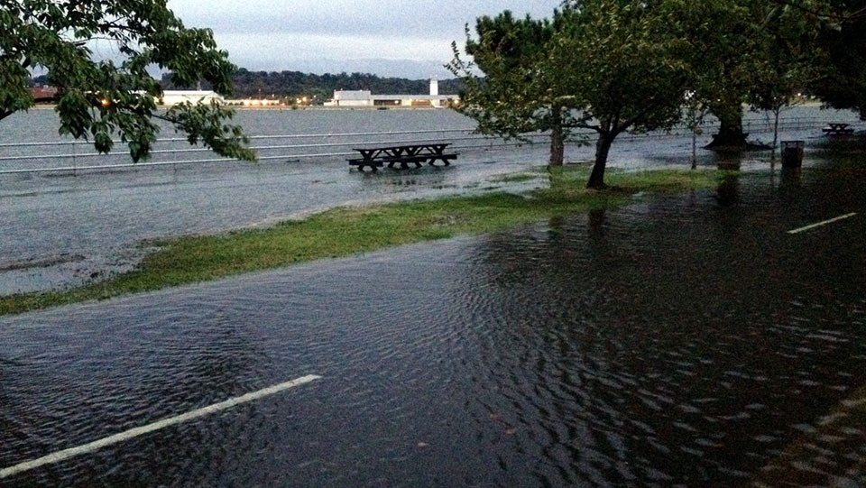
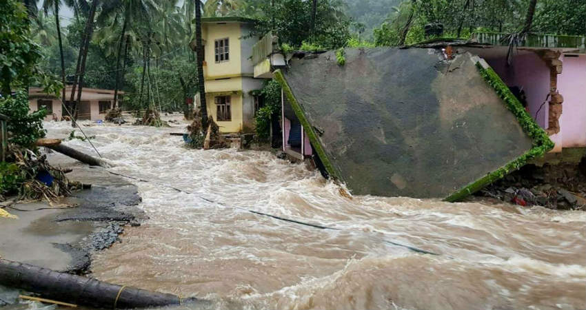

Studies on increased rainfall rates are largely based on the Clausius–Clapeyron relation, which yields ≈7% increase in water vapor in the atmosphere per 1 °C warming, and the duration of storms. Storm tracks indicate a global poleward expansion of the latitude at which the maximum intensity of tropical cyclones occur.
One view of the lightning storm that hit western Washington on September 7, 2019. Thousands of lightning strikes hit western Washington in one night, more than have been seen in 20 years.
The recent increases in activity are linked, in part, to higher sea surface temperatures in the region that Atlantic hurricanes form in and move through. Numerous factors have been shown to influence these local sea surface temperatures, including natural variability, human-induced emissions of heat-trapping gases, and particulate pollution. Quantifying the relative contributions of natural and human-caused factors is an active focus of research.
The quantity of rainfall from Hurricane Harvey had very likely been increased by climate change. The relationship between climate change and the frequency of hurricanes (or tropical cyclones) is still unclear, and is the subject of continued research.
Tropical cyclones and climate change concerns how tropical cyclones have changed (in number, intensity, track or otherwise), and are expected to further change due to climate change. The topic receives considerable attention from climate scientists who study the connections between storms and climate, and notably since 2005 makes news during active storm seasons. The 2018 U.S. National Climate Change Assessment reported that "increases in greenhouse gases and decreases in air pollution have contributed to increases in Atlantic hurricane activity since 1970."
A hurricane occurs in the Atlantic Ocean and northeastern Pacific Ocean, a typhoon occurs in the northwestern Pacific Ocean, and a cyclone occurs in the south Pacific or Indian Ocean. Fundamentally, they are all the same type of storm. The inclusive term used by the scientific community is tropical cyclones.
Tropical cyclones and climate change concerns how tropical cyclones have changed (in number, intensity, track or otherwise), and are expected to further change due to climate change. The topic receives considerable attention from climate scientists who study the connections between storms and climate, and notably since 2005 makes news during active storm seasons. The 2018 U.S. National Climate Change Assessment reported that "increases in greenhouse gases and decreases in air pollution have contributed to increases in Atlantic hurricane activity since 1970."
A hurricane occurs in the Atlantic Ocean and northeastern Pacific Ocean, a typhoon occurs in the northwestern Pacific Ocean, and a cyclone occurs in the south Pacific or Indian Ocean. Fundamentally, they are all the same type of storm. The inclusive term used by the scientific community is tropical cyclones.
As relative sea level increases, it no longer takes a strong storm or a hurricane to cause coastal flooding. Flooding now occurs with high tides in many locations due to climate-related sea level rise, land subsidence, and the loss of natural barriers.
High tide flooding—which causes such public inconveniences as frequent road closures, overwhelmed storm drains and compromised infrastructure—has increased in the U.S. on average by about 50 percent since 20 years ago and 100 percent since 30 years ago.
The effects of rising sea levels along most of the continental U.S. coastline are expected to become more noticeable and much more severe in the coming decades, likely more so than any other climate-change related factor. Any acceleration in sea level rise that is predicted to occur this century will further intensify high tide flooding impacts over time, and will further reduce the time between flood events.
As relative sea level increases, it no longer takes a strong storm or a hurricane to cause coastal flooding. Flooding now occurs with high tides in many locations due to climate-related sea level rise, land subsidence, and the loss of natural barriers. High tide flooding—which causes such public inconveniences as frequent road closures, overwhelmed storm drains and compromised infrastructure—has increased in the U.S. on average by about 50 percent since 20 years ago and 100 percent since 30 years ago. The effects of rising sea levels along most of the continental U.S. coastline are expected to become more noticeable and much more severe in the coming decades, likely more so than any other climate-change related factor. Any acceleration in sea level rise that is predicted to occur this century will further intensify high tide flooding impacts over time, and will further reduce the time between flood events.
During a perigean spring tide, those areas that normally experience frequent high tide flooding may see even higher levels of inundation with longer duration. In this image, a perigee moon coincides with high tide to cause coastal flooding conditions at Hains Point, Washington D.C. on September 26,2015.
8 August 2019, incessant rain accompanied with the rise of water level in rivers and other water bodies have resulted in flooding in many parts of Kerala.
Due to heavy rainfall in the Monsoon season, severe flood affected Kerala. As a security measure in the prevailing situation of heavy rains, the Government of Kerala had issued Red alert in the 9 districts in Northern and Central Kerala, orange alert in 3 districts of Central Kerala, and yellow alert in the 2 districts of southern Kerala. Thousands of people have been evacuated to safer places and relief camps. A total of 121 people have died due to rain-related incidents as of 19 August 2019.
Another deluge had hit the state in August 2018, in which over 470 people died and properties worth US$5.8 billion (₹40000 crore) were damaged.